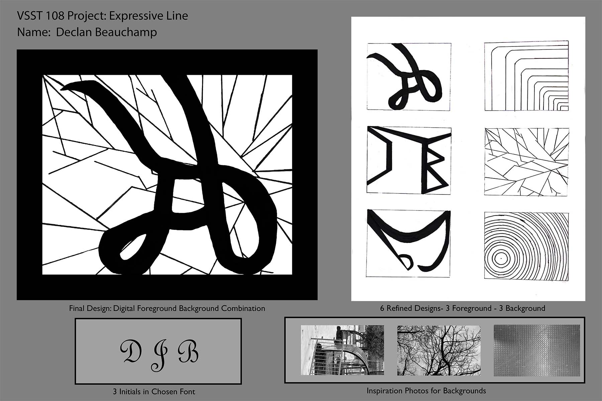

Design I Project 1
In this project, we were tasked with taking our initials, mine being DJB, and stylizing them in a curvilinear style, a geometric style, and a mix of both. After that, we had to make a design based off of a picture that we had taken. We were then tasked with taking each drawing into Adobe Photoshop, and we were to make a composition with our initals and a selected background. Personally, I was aiming for a juxtoposition between the foreground and the backgroud, with the curvilinear foreground, and the sharp, geometric backgroud.